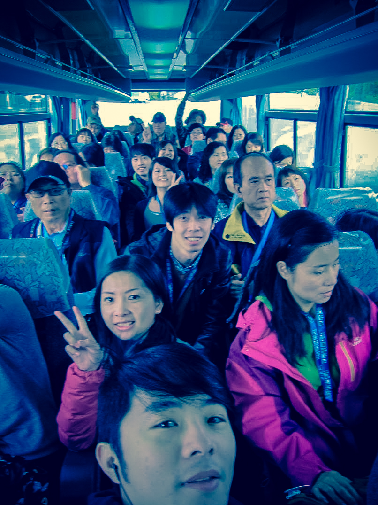
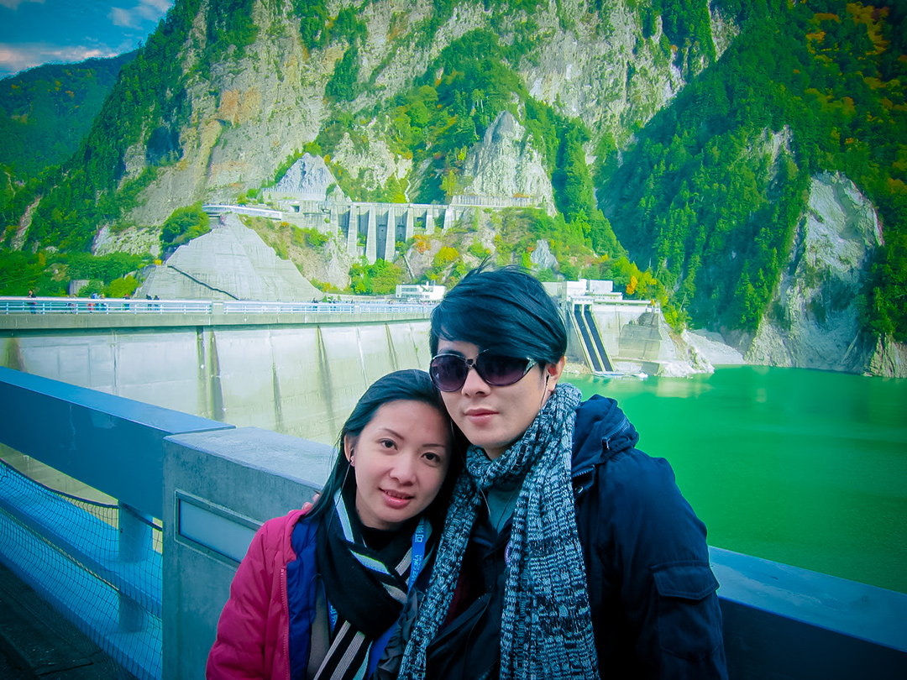

-
阿爾卑斯山脈的壯麗山岳
首次和小妹的堂妹與堂妹夫們一同出遊！
這也是我第一次踏上日本，出發前就滿心期待，
果然不愧是台灣人最喜愛的旅遊國家。
記得當時空氣涼涼的，景色美美的，雖然餐點偏冷，
卻完全澆不熄內心對大自然的嚮往。
沿途望見立山黑部的群峰，高低錯落、色彩斑斕，山草、花木交織成一幅絢麗的畫卷。
黑部水壩筆直高聳，像是人類在群山間留下的一道壯闊印記，
而山谷間殘留的冰川，更是我人生第一次親眼所見，震撼又難忘。
那一刻真的覺得—這趟旅行非常值得。
第一次的日本，就遇上如此多彩又震撼的景色，
也讓我對未來的旅程更加充滿期待。
# 人生第一次被這麼寬廣遼闊的山景給震攝到

FB 撰寫日期:2013.10.06
這行程太美，但腳快走斷了...
# 飛驒高山 三町筋 古街散步

倒映著藍天與名峰，幸運遇見大正池枯木。
# 長野(日本阿爾卑斯山森林國家公園-上高地)
-
日本平望富士，遠山如詩。
# 靜岡 日本平 展望台眺望富士山

合掌屋與金黃稻田，當起童話裡的稻草人。
# 沒有雪的合掌村

這飯店有點老...過了驚悚的一晚!!XD
# 日本 溫泉旅館 浴衣時光

翠湖映群山，秋色漸染。
# 和妹妹們首次出國
-

高山藍天當背景，臉上都是陽光。
# 長野 上高地
-

抬頭就是北阿爾卑斯，空氣甜到不行。
# 上高地 河童橋
-
梓川清得見底，綠意一路鋪到山巒。
# 上高地 梓川
-
FB 撰寫日期:2017.05.17
呼~明晚出發前總算把工作告一段落!!
趕緊先來演練一遍行程 ^^# 圖文不符
# 超人老爸到飯店再開工
# 2013 岐阜 白川鄉 合掌村
-
楓紅初上色，池畔合照剛剛好。
# 日本·石川·金澤·兼六園 徽軫燈籠
-
姊妹成行，在名園裡來張合照。
# 日本·石川·金澤·兼六園
-
茶屋門前停一停，旅途多一味和風。
# 日本·石川·金澤·兼六園 三芳庵
-
被霜淇淋包夾，只要到日本~買就對了~
# 日本·石川·金澤·兼六園 茶屋
-
立山大石打卡。
# 日本·富山·立山黑部·室堂（中部山岳國立公園）
-
山巒如屏展開，視野一路到雲邊。
# 日本·立山黑部·大觀峰 展望台
-
河童燒熱呼呼，甜滋滋的上高地回憶。
# 日本·長野·上高地·河童燒
-
中橋旁小歇，古城節奏慢慢走。
# 日本·岐阜·高山·中橋
-
舉杯乾杯，今晚只管暢聊。
# 日本·岐阜·高山·居酒屋
- 
位置不夠，只好擠在走道上XD
# 日本·立山黑部·團體巴士
-
高原步道開走，秋色一路鋪展。
# 日本·富山·立山·室堂高原
-
碧藍火山湖像寶石，美不勝收。
# 日本·立山黑部·御庫裏池（みくりが池）
-
立山黑部旅遊影片－纜車 # 纜車錄影
-
壯觀大壩當背景，氣勢直接拉滿。
# 日本·立山黑部·黑部水壩 Kurobe Dam
- 
巨壩擋出翡翠湖，震撼零距離。
# 日本·富山·黑部大壩 Kurobe Dam
-
藍天白雲映群峰，連空氣聞起來都很壯闊。
# 日本·長野·上高地
-
湖面清得像鏡子，怎麼拍都好看。
# 日本·長野·上高地·河畔
-
山谷河川交會處，清風把煩惱洗淨。
# 日本·長野·上高地·梓川
-
合掌村縮在谷底，小小屋頂超療癒。
# 日本·岐阜·白川鄉·城山展望台
-
暖黃燈籠亮起，逛街胃口也打開。
# 日本·岐阜·飛驒高山·古街
-
腳尖湊成一朵花，旅伴默契滿分。
# 日本·岐阜·飛驒高山·街角
-
茶道入門，正座腿快麻也要優雅。
# 金澤 兼六園 茶室體驗
-
香噴噴飛驒牛串，邊走邊吃最對味。
# 飛驒高山 古街 # 飛驒牛
-
橋上看河岸，小鎮午後慢節奏。
# 高山 宮川 河畔散步